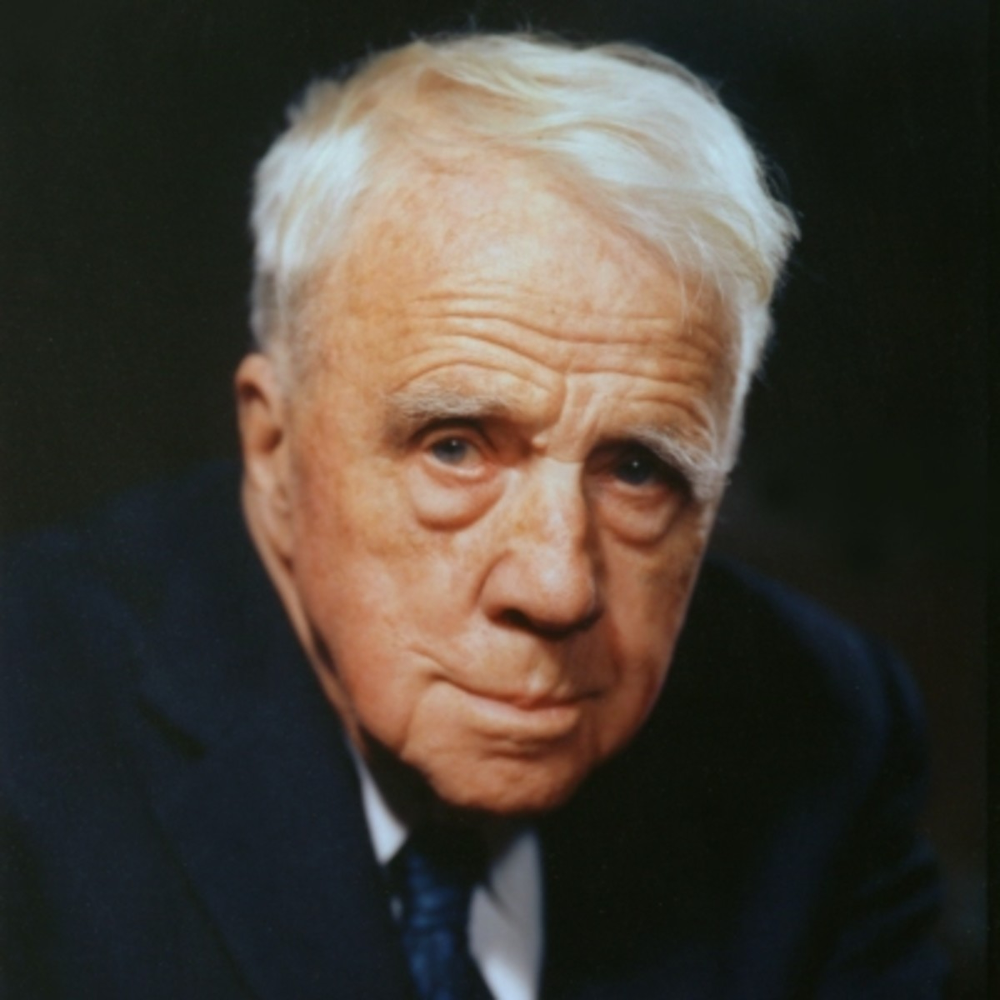

Robert Frost was an American poet. Frost usually wrote poems about rural life in a way that examined social and philisophical themes. Throughout Frost's life he was plagued with grief brought on by the loss of family and also mental illness abundant within the family.
